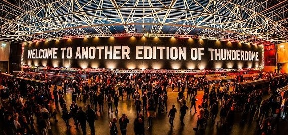

The Evolution of the Harderstyles: A Journey Through Electronic Dance Music's Raw Edges
Electronic dance music (EDM) is a vast and dynamic genre, encompassing a multitude of styles and subgenres. Among the most energetic and intense subgenres within EDM, the "Harderstyles" have carved out their own niche, captivating fans with their relentless beats and distinctive sound. Let's embark on a journey through the history of the Harderstyles, tracing their evolution from underground movements to global phenomena.
Birth of the Harderstyles: Late 1980s - Early 1990s
The roots of the Harderstyles can be traced back to the late 1980s when electronic dance music was taking its first steps. Early pioneers experimented with faster tempos and harder beats, creating a more aggressive and energetic sound compared to the mainstream dance music of the time. This marked the birth of what would later become the Harderstyles.
Hardcore Rave: Early 1990s
The early 1990s saw the emergence of the Hardcore Rave scene, primarily in the United Kingdom and the Netherlands. This movement emphasized high-energy beats, breakbeats, and intense synth melodies. Iconic labels like XL Recordings and R&S Records released tracks that pushed the boundaries of what was possible with electronic music.
Gabber Takes Center Stage: Mid-1990s
In the mid-1990s, the Dutch Gabber scene exploded onto the global stage. Gabber music, characterized by its thunderous kick drums, distorted melodies, and lightning-fast BPM (beats per minute), gained a massive following. Producers like The Prophet and Rotterdam Terror Corps became synonymous with this aggressive sound.
Hardstyle Emerges: Late 1990s - Early 2000s
As Gabber began to splinter into various subgenres, a new style known as Hardstyle emerged. Hardstyle retained the fast BPM of Gabber but introduced a more melodic and euphoric element. Producers like DJ Zany and The Prophet were instrumental in defining this subgenre, which quickly gained popularity, especially in the Netherlands.
Raw Hardstyle and Hardcore Continuation: Mid-2000s - Present
As the 2000s progressed, the Harderstyles continued to evolve. Raw Hardstyle emerged, characterized by a darker and more aggressive sound. Artists like Radical Redemption and Warface pushed the boundaries of Hardstyle, taking it to new extremes.
Meanwhile, Hardcore music continued to flourish, with subgenres like Frenchcore, Industrial Hardcore, and Uptempo Hardcore offering unique sonic experiences for dedicated fans.
Global Domination: 21st Century
In the 21st century, the Harderstyles reached new heights of popularity. Festivals dedicated to these genres, such as Defqon.1 and Qlimax, draw massive crowds from around the world. Iconic DJs and producers like Headhunterz, Angerfist, and Sefa have become household names among EDM enthusiasts.
Diversity and Innovation
One of the most notable aspects of the Harderstyles is their diversity and constant innovation. Artists are constantly pushing boundaries, blending elements from different subgenres, and experimenting with new sounds. This evolution ensures that the Harderstyles remain vibrant and exciting for both longtime fans and newcomers alike.